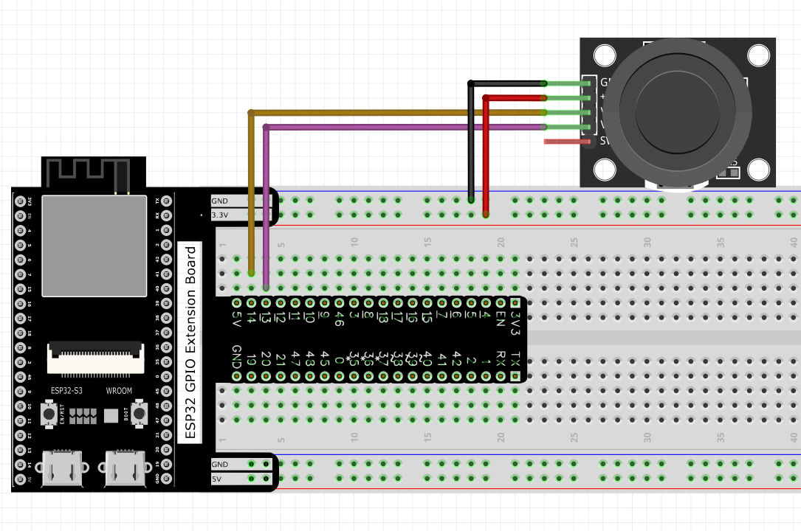

Chapter 12 Joystick
In the previous chapter, we have learned how to use rotary potentiometer. Now, let’s learn a new electronic module joystick which working on the same principle as rotary potentiometer.
Project 12.1 Joystick
In this project, we will read the output data of a joystick and display it to the Terminal screen.
Component List
ESP32-S3-WROOM x1
GPIO Extension Board x1
830 Tie-Points Breadboard x1
Joystick x1
Jumper Wire x5
Component knowledge
Connect
Code
In this project’s code, we will read the ADC values of X and Y axes of the Joyst ick, and read digital quality of the Z axis, then display these out in Terminal. Move the program folder “Super_Starter_Kit_for_ESP32_S3/Python/Python_C odes” to disk(D) in advance with the path of “D:/Micropython_Codes”. Open “Thonny”, click “This computer” >> “D:” >> “Micropython_Codes” >> “12.1_Joysti ck” and double click “Joystick.py”.
12.1_Joystick

Click “Run current script”. Shifting the Joystick or pressing it down will make the printed data in “Shell” change.

The following is the program code:
from machine import ADC,Pin
import time
xVal=ADC(Pin(14))
yVal=ADC(Pin(13))
xVal.atten(ADC.ATTN_11DB)
yVal.atten(ADC.ATTN_11DB)
xVal.width(ADC.WIDTH_12BIT)
yVal.width(ADC.WIDTH_12BIT)
while True:
print("X,Y:",xVal.read(),",",yVal.read())
time.sleep(1)